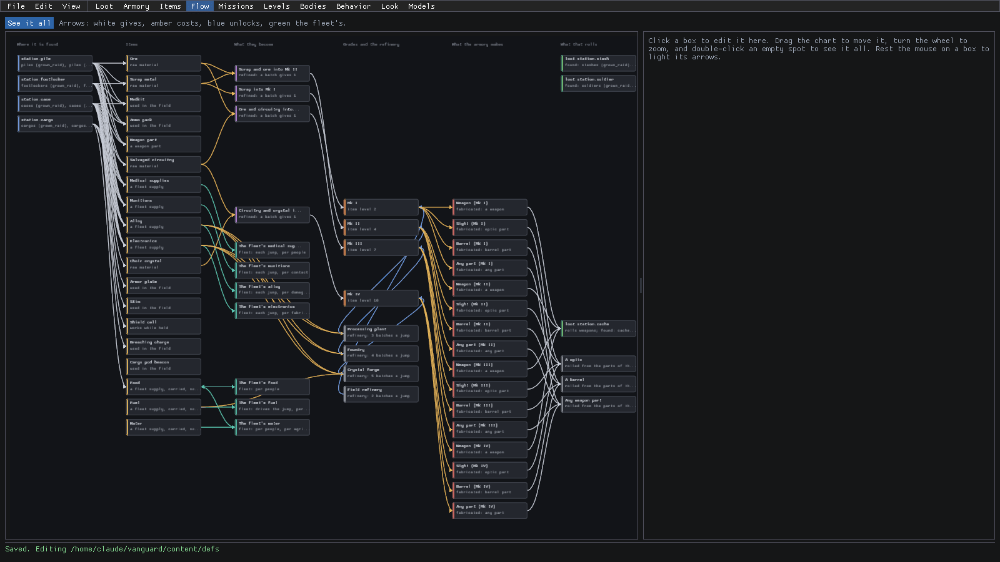
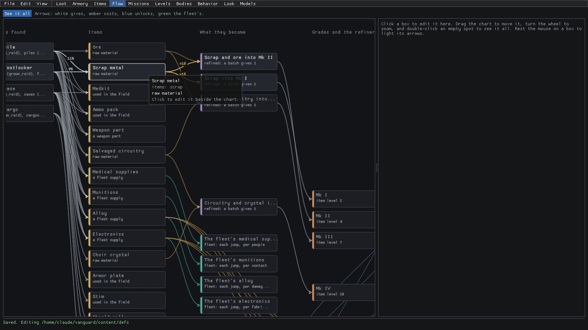
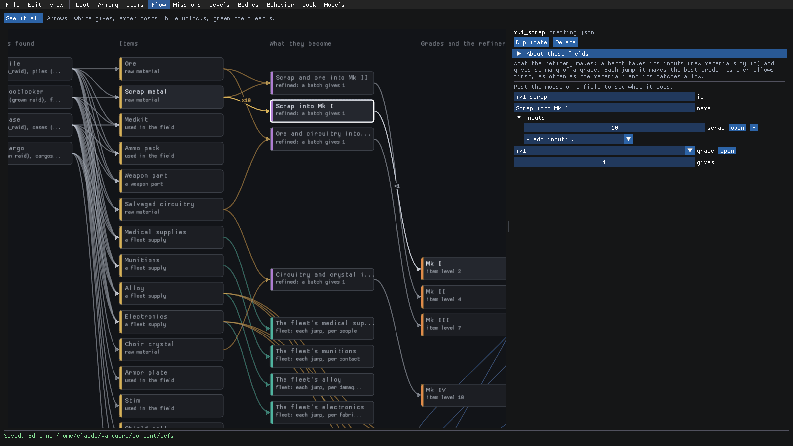
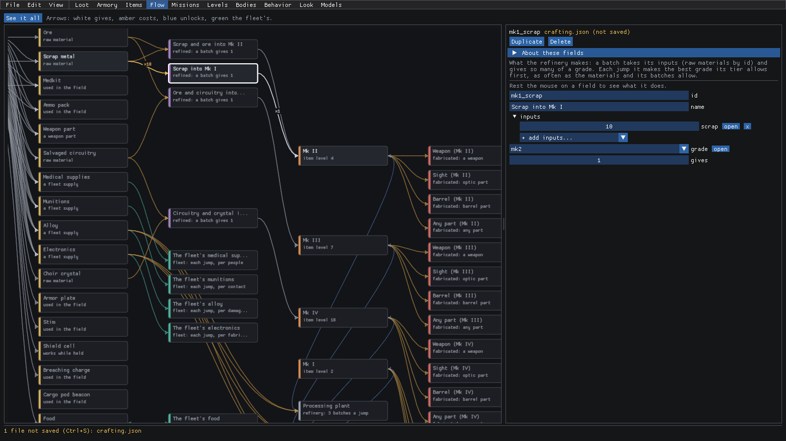
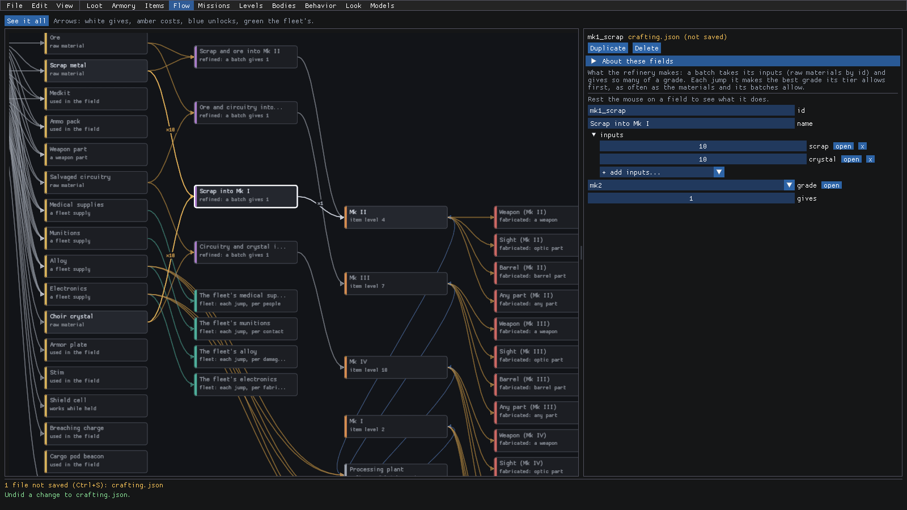
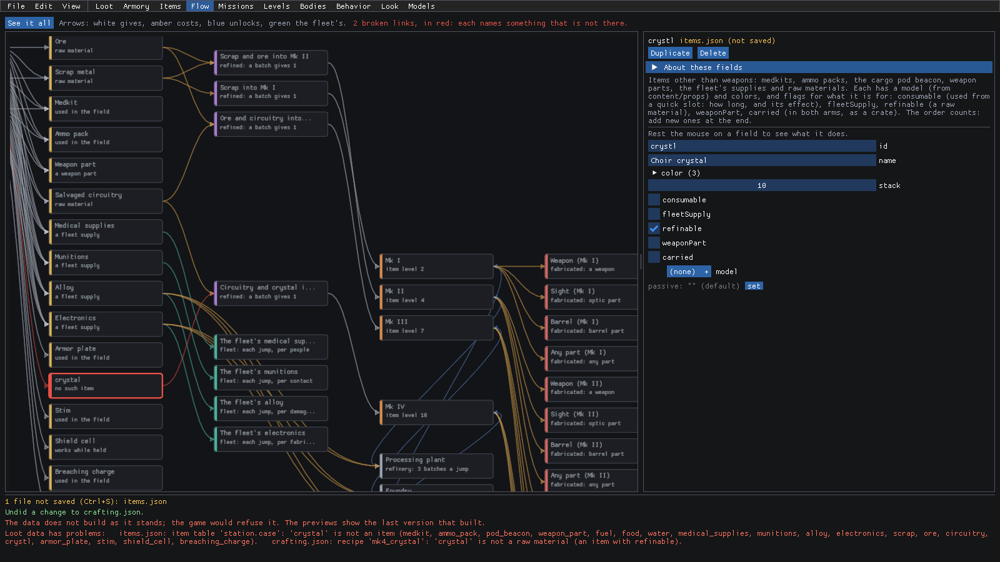
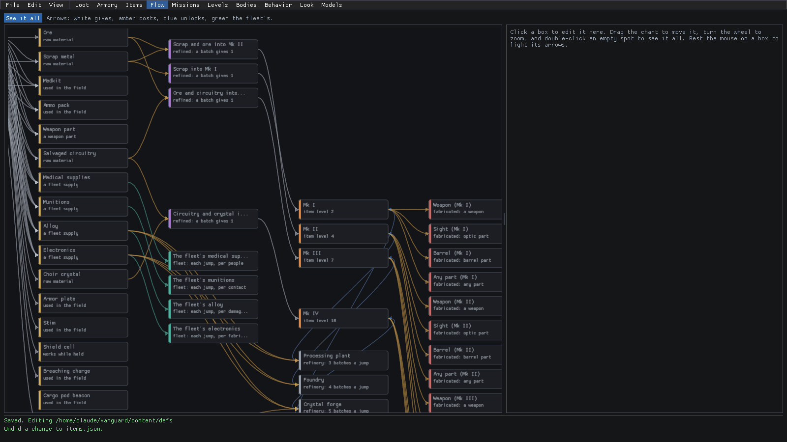
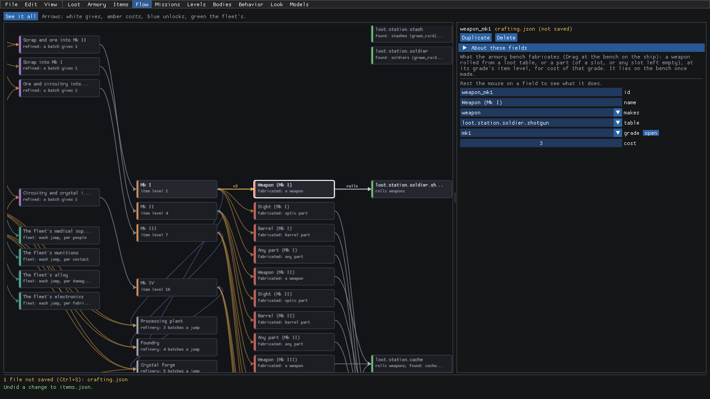
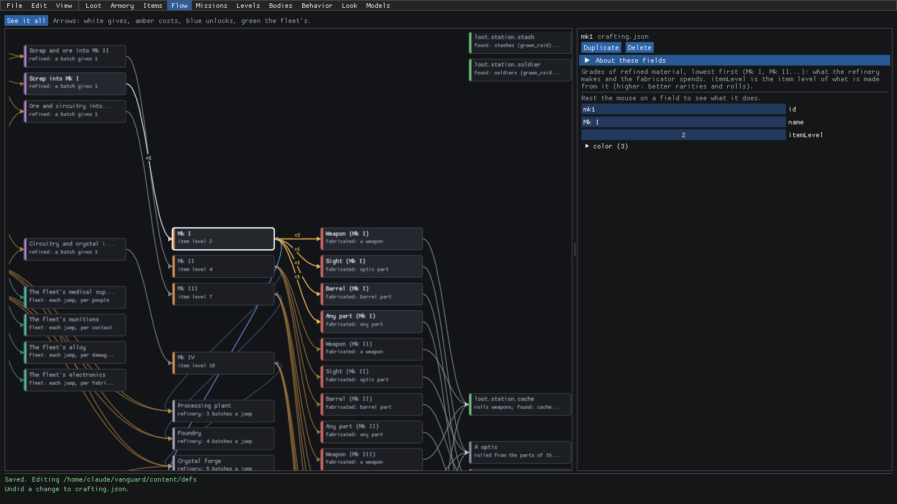

Studio: Flow
The loot data lives in a handful of files: the item tables, the items, the refinery's recipes, the fleet's supplies, the grades, the refinery tiers, the fabrications and the loot tables. Each one makes sense on its own, but the interesting question crosses all of them. How does a lump of scrap you pick up on deck 2 end up as a gun on the armory bench?
That's what Flow mode is for. It draws the whole chain as boxes and arrows, read left to right, and it's live: click a box and edit it right next to the chart, and the chart redraws as you go. It's the place to sanity check the economy before you go digging through the other modes.
How to open it
Click Flow on the mode bar at the top, or start Studio straight into it:
dotnet run --project src/LastFleet.Studio -- --mode flow

There are two panels:
- The chart (left): six columns, each with its title along the top. Where it is found (the item tables, with the missions that roll from them), Items, What they become (the refinery's recipes, and the fleet's supplies below them), Grades and the refinery, What the armory makes and What that rolls. The bar above it says what the arrow colors mean: white gives, amber costs, blue unlocks and green is the fleet's.
- The edit panel (right): empty until you click a box. Then it's the same editor you'd get in Items or Loot mode, for whatever that box is.
Drag the chart to move it, turn the wheel to zoom, and press See it all (or double-click an empty spot) to fit the whole thing back on screen.
Follow a material to a gun
So you want to know where scrap comes from and what it turns into? Here's the flow:
- Turn the mouse wheel over the left side of the chart to zoom in. Once you're close enough, every arrow shows its amount.
- Drag an empty spot of the chart to move it, until the first two columns are on screen.
- Rest the mouse on Scrap metal. Its arrows light up, with their amounts, and everything else dims.

Read it left to right. The white arrows coming in are the item tables that give scrap, with the share of their rolls
(11% of a station pile, 9% of a footlocker). The amber arrows going out are what it costs: x10 scrap into each of
the two recipes that take it.
Want to keep going? Rest the mouse on the recipe, then on the grade it gives, and you'll walk the whole way to the armory's fabrications and the loot table they roll from. That's it!
Change what a recipe makes
Say the Scrap into Mk I recipe feels too generous, and you want it to make Mk II instead. You don't need to go find it in Items mode. Just do it from the chart:
Click the Scrap into Mk I box. It gets a white outline, and the edit panel shows the recipe: its
id,name,inputs,gradeandgives.
Open the grade list and pick
mk2. The chart redraws right away: the recipe's white arrow now runs to Mk II, and Mk I drops down the column, since nothing refines into it anymore.
Now let's make it cost something rarer too. Open + add inputs... under the inputs. It only offers the raw materials the recipe doesn't take yet (
ore,circuitry,crystal). Pickcrystal.A new amber arrow runs from Choir crystal into the recipe,
x10, and the panel has a row for it with an open button (jump to that item) and an x (take it out again).
The panel's title now says (not saved), and the bottom line says "1 file not saved (Ctrl+S): crafting.json". Happy with it? Ctrl+S writes it. Not so sure? Ctrl+Z takes back one change at a time.
Find and fix a broken name
Everything in the loot data refers to everything else by id. So what happens when an id changes and something still uses the old one? Flow makes it really obvious.
- Click the Choir crystal box. The panel shows the item, with its
id(crystal) at the top. - Click the id field, select it all (Ctrl+A), type
crystland press Enter. Typo on purpose!
The chart goes red where things broke. The recipe that takes crystal now points at a red box, crystal, "no such
item", with red arrows. The bar above the chart counts them ("2 broken links, in red: each names something that is
not there"), and the bottom of the window lists the game's own errors: the station.case table and the mk4_crystal
recipe both name a crystal that's gone.

The chart is read straight from the files, so it still shows when the data doesn't build. The rest of Studio shows the last version that built until you fix it, and the game would refuse the data as it stands, so don't save it like this.
- Fix the name: here, Ctrl+Z puts the id back. In real life, the red box tells you which name to fix, and where.
The red is gone, the broken links are gone, and the bottom line says "Saved." again.

Point a fabrication at a different loot table
The armory bench fabricates weapons and parts, and each fabrication says which loot table its weapon rolls from. Want the Mk I weapon to come out of a different table? Here's how:
Drag the chart left until the last two columns, What the armory makes and What that rolls, are on screen.
Click Weapon (Mk I). The panel shows what it
makes, thetableit rolls from, itsgradeand itscost.Open table and pick another one, e.g.
loot.station.soldier.shotgun. The fabrication's rolls arrow now runs to a new box for that table on the right.
Every reference in the panel has an open button next to it. Click the one beside grade and the panel jumps to the
mk1grade: itsitemLevel, and on the chart, every fabrication it pays for, with how many.
As always, Ctrl+S keeps the change and Ctrl+Z takes it back.
Where to next
- The reference for this mode is Flow: how it all connects.
- The fields you edit here are the same ones as in Items mode (items, item tables, supplies, crafting) and Loot mode (loot tables). Flow is just a different way in.
- What a mission rolls its piles, footlockers and crates from is set in the mission template. See missions.md.